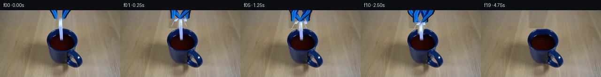

![首帧]()

Round 00
2026-11-06T03:43:48.205480+00:00像素候选变化代码 +243/−0inspection 更新
pixels 8c75b3e60f3db305 · code 37622c820c6f08cc
查看本轮 generate.py 真实 diff
--- previous/generate.py +++ current/generate.py @@ -0,0 +1,243 @@ +"""PixelWorld case_0047: grabber drops the white ceramic domino into the mug. + +Local pixel operations only: + * clean "plate" (table + mug without tool) built from same-row table copies + and horizontal interpolation across the symmetric mug opening; + * domino and grabber sprites extracted from frame 0 with coverage alpha; + * per frame: translated domino (depth tint in the dark liquid, front-rim + occlusion), translated/splayed grabber prongs, faint expanding ripples. +Frame 0 is written byte-identical to first_frame.png. +""" +from pathlib import Path +import numpy as np +from PIL import Image, ImageDraw +import artifact_io + +ROOT = Path(__file__).parent +F0 = np.array(Image.open(ROOT / 'first_frame.png')).astype(np.float64) +H, W, _ = F0.shape + +# ---------------------------------------------------------------- plate ---- +plate = F0.copy() + +# table strip behind the tool: copy a clean same-row table patch from x44..101 +for y in range(0, 39): + plate[y, 100:157] = F0[y, 44:101] +# feather the copied table patch into the original at its borders +def feather_h(img, y0, y1, x0, x1, edge, src): + for y in range(y0, y1): + for x in range(x0, x0 + edge): + w = (x - x0) / edge + img[y, x] = w * img[y, x] + (1 - w) * src[y, x] + for x in range(x1 - edge, x1): + w = (x1 - x) / edge + img[y, x] = w * img[y, x] + (1 - w) * src[y, x] +feather_h(plate, 0, 39, 100, 157, 4, F0) + +# mug strip (rim / liquid / front rim): interpolate between clean arc edges +for y in range(39, 96): + L = F0[y, 119:122].mean(axis=0) + R = F0[y, 139:142].mean(axis=0) + for x in range(120, 141): + t = (x - 120) / 20.0 + v = L * (1 - t) + R * t + w = min(1.0, max(0.0, (x - 120) / 3.0, (140 - x) / 3.0)) + plate[y, x] = w * v + (1 - w) * plate[y, x] + +# ------------------------------------------------------- domino sprite ----- +SX0, SX1, SY0, SY1 = 122, 137, 14, 68 # extraction bbox +CONTACT = 59.0 # liquid contact row (screen y) + +def tint_k(depth): + return float(np.clip(0.18 * depth - 0.23, 0.0, 1.0)) + +# intrinsic colour per sprite pixel (dry) +Fint = F0.copy() +for x in range(SX0, SX1): + # reference dry colour: nearest fully-covered body pixel above the rim + ref_y = None + for y in range(40, 22, -1): + c = F0[y, x]; p = plate[y, x] + if c[2] - p[2] > 90 and c[1] > 150: + ref_y = y; break + for y in range(SY0, SY1): + if y > 55 and ref_y is not None: + Fint[y, x] = F0[ref_y, x] * (0.6 + 0.4 * (y < 60)) + Fint[y, x] * (0.4 * (y >= 60)) +# simpler: hard copy for submerged rows from y54 same column +for x in range(SX0, SX1): + for y in range(56, SY1): + Fint[y, x] = F0[54, x] + +# coverage alpha by colour projection, corrected for liquid tint in frame 0 +alpha = np.zeros((H, W)) +for y in range(SY0, SY1): + for x in range(SX0, SX1): + c = F0[y, x]; p = plate[y, x]; f = Fint[y, x] + d = f - p + n = float(d @ d) + if n < 200: + continue + a = float((c - p) @ d) / n + if y >= 60: # frame-0 submerged tail: undo tint + a /= max(1e-3, 1.0 - tint_k(y - CONTACT)) + alpha[y, x] = float(np.clip(a, 0.0, 1.0)) + +# drop tiny noise, close the body core +alpha[alpha < 0.12] = 0.0 +for y in range(20, 60): # body core is opaque … diff truncated; 156 more lines …